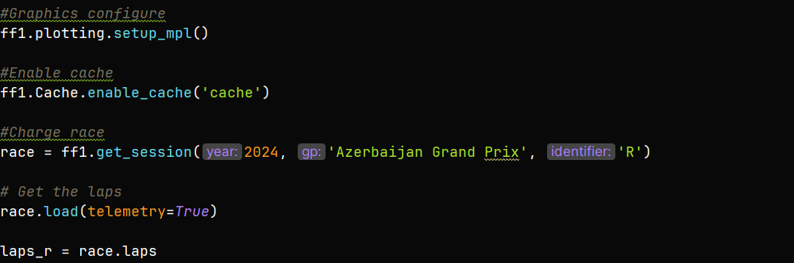

When I saw the incredible overtake by Piastri on Leclerc, I started imagining how all this data could be analyzed. In F1, this data has a specific name: it´s called telemetry, if you are not familiar with telemetry, let me explain: it captures data about the drivers' actions, such as how much they accelerate, brake and their speeds. With this information, we can compare the performances with two different drivers and see the distinct driving styles.
Where can I get the F1 data?

Of course, I found a Python library that allows you to download all the F1 data race weekends, it´s called fastf1, this library provides telemetry for both qualifying sessions and race. To analyze the data I use one of my favorite Python libraries: MatplotLib.
A simple script for analyzing data:
Now. Let´s look at how we can create a simple Python script to view telemetry data. I´ll show you two types of telemetries: the race telemetry and the overtake lap telemetry.
First create a Python project and within it, a directory named: cache. Then, import the necessary Python libraries: fastf1 and MatplotLib:

Configure ff1 graphics. We'll save the data in the directory we created earlier and load the race data into it. Store all the race data in a variable named laps_r:

Now, let´s compare the full race telemetry for Piastri and Leclerc:
Output:
The code and the graphics look great, but what are they telling us?
It´s simple: these two lines represents the lap times over the course of the race. The orange line shows Piastri´s lap times, while the green line shows Leclerc's. Throughout the race, you can see the closely they fought, with very similar times. However, in the final laps, Leclerc´s performance starts to drop, possibly due to tire wear.
Next, we'll analyze difference between Piastri and Leclerc during the overtake lap and plot their telemetry, showing speed, braking and acceleration differences during the overtake.
Output:
Look at how much faster Piastri was compared to Leclerc in that incredible lap!
Now, let's take a look at the code and the output for the telemetry during this overtake:
Output:
So, what do we see?
In the first graph, we can observe the speed difference between the two drivers. At the start of the line, Piastri is faster than Leclerc. As they approach the first corner, both drivers slow down, but in the apex, Piastri´s line remains above Leclerc´s line, indicating that Piastri carried more speed through the corner. This is where the overtake happens.
In the second and third graphs, we can analyze braking and the acceleration data. The first braking zone is critical, as it´s where the overtake occurs. Piastri brakes early than Leclerc , managing a speed difference of more than 20km/h, carefully calculating the braking to pass Leclerc. In the second braking zone, Piastri breaks late to defend his position.
The acceleration graph shows the drivers´ styles. Leclerc's acceleration is more gradual and controlled, while Piastri´s is more aggressive.
Conclusion:
Telemetry data helps us understand the strategies and styles of F1. That´s Why I love Data. you can check out this code on my GitHub repository at the link below:
https://github.com/DCEtech/F1AzerbaijianRaceAnalysis